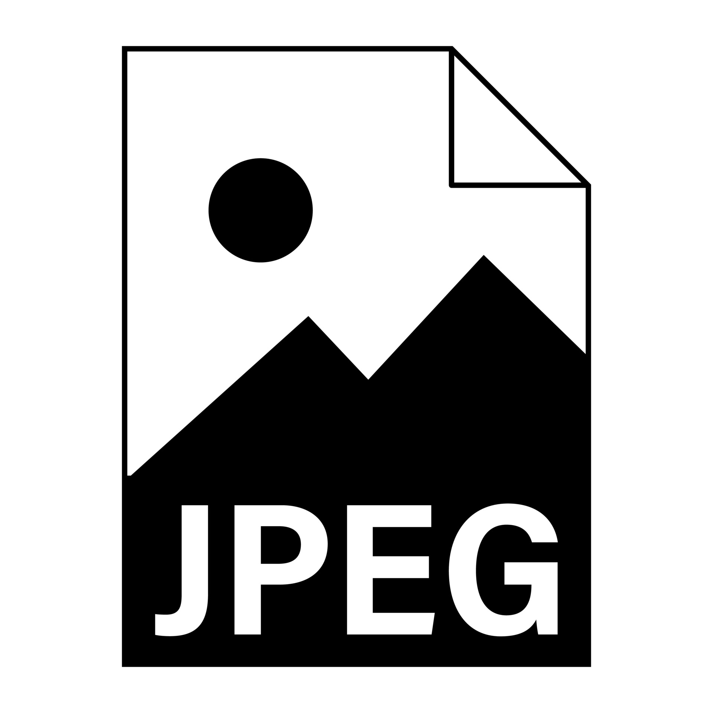
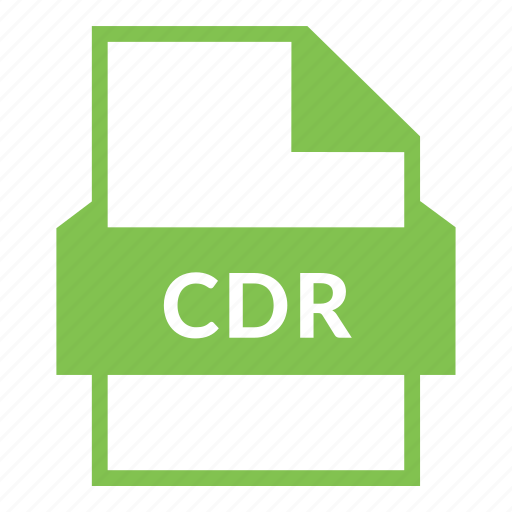

arquivos de imagens
Arquivo de Imagem Raster
Os formatos de imagem mais comuns para a web (JPEG, GIF e PNG) estão todos sob a categoria raster.
Os tipos de arquivos de imagens raster mostram imagens estáticas onde cada pixel tem uma cor, posição e proporção
definidas com base em sua resolução (por exemplo, 1280×720).
Como elas são estáticas, não é possível redimensionar as imagens com eficiência, o design original e os pixels serão
simplesmente esticados para preencher o espaço extra. Isto acaba criando uma imagem desfocada, pixelada ou distorcida de
alguma forma.
arquivo de imagem vetorial
SVG, AI, e CDR são exemplos de tipos de arquivos de imagem vetoriais.
Ao contrário dos formatos de arquivos de imagem raster estáticos, onde cada forma e cor de desenho é ligada a um pixel,
estes formatos são mais flexíveis.
Os gráficos vetoriais, em vez disso, utilizam um sistema de linhas e curvas em um plano cartesiano, escalonadas em
comparação com a área total, e não um único pixel.
Isto significa que você pode ampliar infinitamente a resolução da imagem original sem qualquer perda de qualidade ou
distorção.
https://kinsta.com/pt/blog/tipos-arquivo-imagem/#:~:text=15%20Tipos%20de%20arquivos%20de%20imagem%20mais%20populares,SVG%20%E2%80%93%20Scalable%20Vector%20Graphics%20...%20Mais%20itens
O que é JPG/JPEG?
O formato de imagem JPEG, também chamado de JPG, é o formato de imagem considerado padrão e o mais utilizados no
ambiente digital. Além disso, o JPG possui uma taxa de compressão bastante alta, podendo fazer com que uma imagem de
resolução Full HD (1920×1080 pixels) ocupe muito pouco espaço no disco rígido – cerca de 100 Kb. Contudo, isso só
acontece devido à perda da qualidade.
A taxa de compressão do JPG é ajustável. isso significa que é possível equilibrar a qualidade com o tamanho da imagem.
Ou seja, em casos em que a taxa de compressão é mínima, o arquivo ainda não ocupa tanto espaço no disco.
Existem pelo menos dois pontos importantes sobre o formato JPEG que devem ser considerados:
°Não é ideal quando a imagem não pode ter nenhuma compactação ou ter sua qualidade reduzida;
°Não é muito indicado para ícones, tipografias ou gráficos que precisam mostrar ótima definição entre os pixels.

https://www.futuraexpress.com.br/blog/o-que-e-jpg/
PNG
A sigla PNG significa “Portable Network Graphics”, que é um formato de imagem digital utilizado para implementar
elementos visuais em um site na web. Além disso, este formato foi desenvolvido para superar as limitações de outros
formatos, como o GIF, em aspectos como cores e licenciamento.
O principal motivo para o desenvolvimento deste formato foi facilitar a troca de imagens através da internet, assim como
o JPG. Contudo, a grande diferença entre estes dois formatos é que a compressão das imagens no formato PNG não causam
tanta perda de qualidade, diferentemente do JPG.
Outro diferencial das imagens em formato PNG é o suporte para transparência, que é indicado como um fundo quadriculado
nos editores de imagem. Assim, o que está quadriculado no editor será mostrado transparente no arquivo, possuindo a cor
do plano de fundo do site ou imagem.
 https://www.futuraexpress.com.br/blog/o-que-e-png/
https://www.futuraexpress.com.br/blog/o-que-e-png/
GIF
O GIF (Graphics Interchange Format) é um formato de imagem que foi lançado pela empresa CompuServe no ano de 1987. Em
português, a sigla significa Formato de Intercâmbio de Gráficos, e este formato possibilita a compactação de várias
cenas, exibindo movimento. Os GIFs não possuem som, as próprias imagens transmitem a mensagem desejada.
Bastante utilizado em imagens na web, o GIF possui limitações de qualidade, mas a possibilidade de criar animações é o
seu grande diferencial. Estas possuem cerca de 15 frames por segundo.
Atualmente, com formatos de imagem que possuem mais qualidade, o GIF não é tão utilizado na web, com exceção dos casos
em que é necessário uma imagem em movimento. O GIF é capaz de armazenar somente 256 cores, tornando sua utilização
comercial totalmente inviável, visto que os novos formatos, como o PNG e o JPG, armazenam um número maior de
informações.
O seu uso em redes sociais, no entanto, segue em alta, visto que é possível criar um ambiente completamente descontraído
através da utilização do GIF.
Características do GIF
°Animados: São imagens em movimento;
⚬Rápidos: Possuem, no máximo, 10 segundos de duração;
⚬Universais: Podem ser compreendidos independente do idioma;
⚬Eficientes: Transmitem a mensagem desejada por quem o envia;
⚬Engraçados: São utilizados para transmitir humor.
 https://futuraexpress.com.br/blog/o-que-e-gif/
https://futuraexpress.com.br/blog/o-que-e-gif/
TIFF
Um arquivo com a extensão TIF ou TIFF é um arquivo de imagem marcado. Este tipo de arquivo é usado para gráficos do tipo
raster de alta qualidade. O formato suporta compactação sem perdas, na qual nenhum dado de imagem é perdido durante o
processo de compactação. Isso permite que os artistas gráficos e fotógrafos arquivem suas fotos de alta qualidade em uma
quantidade gerenciável de espaço de armazenamento sem comprometer a qualidade.
TIFF e TIF podem ser usados alternadamente. TIFF é um acrônimo para formato de arquivo de imagem marcada.
O formato TIFF foi desenvolvido por uma empresa chamada Aldus Corporation para fins de editoração eletrônica. A Adobe
agora detém os direitos autorais do formato TIF.
A versão 1 do padrão foi lançada em 1986, o TIFF tornou-se um formato padrão internacional em 1993 e 6.0 é a versão mais
recente.
https://www.topgadget.com.br/howto/graphs/o-que-sao-e-pra-que-servem-os-arquivos-tif-e-tiff.htm
CDR
Arquivos anexados com a extensão CDR são geralmente classificados como arquivos gráficos vetoriais. As imagens digitais
são armazenadas com a aplicação de determinadas especificações de codificação e compressão de arquivos desenvolvidos por
diferentes criadores de aplicações, empresas e organizações. Os gráficos vetoriais referir os desenhos digitalizados e
sequências animadas usando o software desenvolvido para criar estas imagens estáticas e motion graphics digitais.
Arquivos gráficos vetoriais salvos no formato CDR também são chamados de arquivos de imagem CorelDRAW. Os usuários de
sistemas baseados no Microsoft Windows pode criar, abrir e visualizar o conteúdo de um arquivo CDR com o software
CorelDraw entre outras aplicações Corel suportados pelo Microsoft Windows. Usuários de Mac podem, por outro lado
instalar o software Inkscape, particularmente a versão desenvolvida para plataformas Mac, para criar e abrir esses
arquivos CDR. Como os arquivos gráficos vetoriais no formato CDR não são reconhecidos por muitas aplicações, o software
CorelDraw, entre outros programas integrados com suporte para a criação desses arquivos CDR pode ser usado para exportar
esses arquivos CDR para outros formatos de compressão de arquivos de imagem mais amplamente utilizados como JPEG e assim
por diante.
"as imagens vetoriais são criadas a partir de combinações matemáticas e geométricas entre a ligação de pontos e segmentos
de linhas sobre um plano bidimensional.
"Assim, na composição dos desenhos, enquanto com imagens de bitmap novos pixels devem ser criados, em vetores basta
repetir o mesmo padrão matemático. Em consequência disso, diferentemente das imagens em bitmap, vetores não perdem
qualidade quando redimensionados."

https://www.reviversoft.com/pt/file-extensions/cdr
https://blog.render.com.br/design-grafico/o-que-e-imagem-vetorial/
AI
AI, a abreviação de Adobe Illustrator, é o tipo de arquivo da Adobe para imagens vetoriais.Ao contrário de arquivos rasterizados criados com base em pixels, os vetoriais não perdem resolução quando são
dimensionados, porque usam uma fórmula complexa parecida com um gráfico, que é infinitamente expansível.
Os arquivos AI renderizam desenhos, logotipos e ilustrações do Illustrator com alto nível de detalhes. Como os arquivos
são pequenos e de fácil escalabilidade, eles são a escolha de muitos designers e ilustradores. Também são muito
flexíveis, pois, ao contrário de outros tipos de arquivo, permitem camadas e transparência.
Como o AI é um tipo de arquivo da Adobe, você precisará usar o Illustrator para criar, editar e salvar um arquivo AI.
Mas você consegue ver arquivos AI em vários programas de terceiros, embora eles não forneçam toda a funcionalidade de
edição.
https://www.adobe.com/br/creativecloud/file-types/image/vector/ai-file.html
SVG
O formato de arquivo Scalable Vector Graphics, geralmente referido como SVG, foi desenvolvido pelo W3C como uma
linguagem de marcação para renderizar imagens bidimensionais diretamente dentro do navegador.
Não depende de pixels como um formato raster, mas usa texto XML para delinear formas e linhas de forma similar a como as
equações matemáticas criam gráficos.
Isto significa que você pode aumentar infinitamente as imagens SVG sem perda de qualidade.
Vantagens e Desvantagens
⚬Pequenos tamanhos de arquivo e escala sem perdas para ilustrações simples, formas e textos.
⚬Não é um formato ideal para imagens ou desenhos complexos.
Casos de uso
⚬O SVG é o formato ideal para logotipos, ícones, ilustrações simples e qualquer outra coisa que você queira ser
livremente escalável com seu design responsivo. Se você estiver usando WordPress, certifique-se de verificar
como habilitar o suporte a WordPress SVG para seu website.
https://kinsta.com/pt/blog/tipos-arquivo-imagem/#:~:text=15%20Tipos%20de%20arquivos%20de%20imagem%20mais%20populares,SVG%20%E2%80%93%20Scalable%20Vector%20Graphics%20...%20Mais%20itens
Proxima pagina
Pagina anterior
Desenho
Executavel
WEB
Banco de Dados
Compactados
Biblioteca dinamica
Texto
Video
Pagina